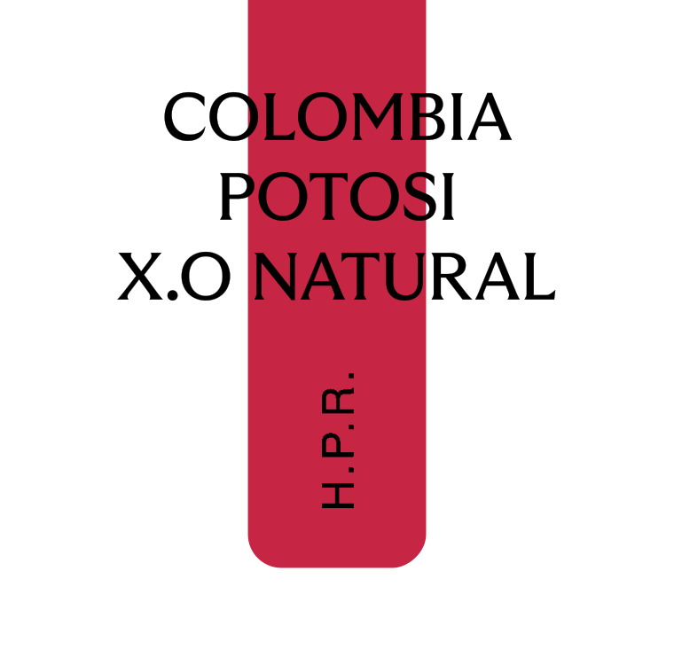
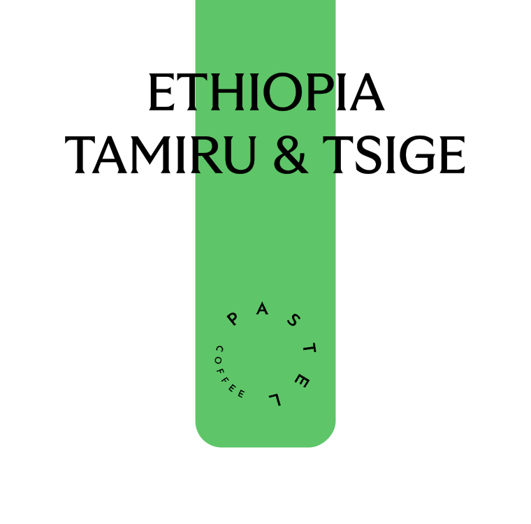

2023년 새해가 밝았습니다.
여러분은 올해 어떤 새로운 도전을 계획하고 계신가요?
우리는 새해가 되면 도전적인 목표를 세우곤 합니다.
'매일 운동하기’ 같은 꾸준함이 필요한 계획을 세우기도 하고, ’안 가본 나라 몇 개국’ 여행하기와 같은 변화가 필요한 목표를 만들기도 합니다.
RBC는 올 한 해 동안 더 다양한 커피를 경험하고 여러분에게 소개하기 위한 계획을 세웠습니다.
그 시작으로 1월에는 ‘도전(Challenge)적인 커피’ 3종을 수집해 소개드립니다.
이번 커피는 각각 ‘포도맛 웰치스’, ‘적포도’, ‘청포도’를 연상시키는 포도 3총사입니다.
모두 도전적인 생산 방식을 통해 탄생한 커피입니다.
매력적인 향미를 끌어내기 위한 커피 생산자들의 도전 이야기를 아래 커피 소개에 적어두었습니다.
여유가 있으실 때 읽어보면서 드시면 더 즐거운 커피 경험이 되실거에요.
여러분도 신포도 보듯 멀리서 보기만 하지 말고,
오며 가며 RBC에 들르셔서 낯설지만 매력적인 커피의 맛에 도전해보시는 것은 어떨까요?
새해가 밝았습니다.
여러분은 어떤 새로운 도전을 계획하고 계신가요?
도전적인 경험으로 가득한 한 해가 되시길 바랍니다.
| 포도맛 웰치스 같이 위트있는 커피 |
| 농장 |
Villarazon |
| 지역 |
Colombia Armenia, Quindio |
| 품종 |
Pink Bourbon |
| 가공 |
Honey
(Wine Yeast, Grape) |
| 콜롬비아 비야라조 허니 그레이프 |
|
포도맛 웰치스가 떠오르는 위트있는 커피입니다.
부담스럽지 않을 정도의 달콤한 포도와 꽃향기, 그리고 밤꿀 같은 달콤쌉쌀한 맛을 직관적으로 느껴볼 수 있습니다. 트렌디한 가공을 거친 커피를
경험해보고 싶은 분께
추천드려요.
|

| 적포도 같이 달큰한 원두 |
| 농장 |
Potosi |
| 지역 |
Colombia Calecedonia, Valle Del Cauca |
| 품종 |
Colombia |
| 가공 |
X.O Natural |
| 콜롬비아 포토시 XO Natura |
|
달큰하고 진득한 적포도의 단맛이 연상되는 커피입니다.
와인을 증류해서 만드는 꼬냑의 향미도 머금고 있습니다. 묵직한 단맛과 개성 있는 향미 가진 커피를 좋아하는 분께 추천드려요.
|

| 청포도 같이 상큼한 원두 |
| 농장 |
Tamiru + Tsige |
| 지역 |
Ethiopia Sidama Bensa + Ethiopia Yirgacheffe Gedeo Aricha |
| 품종 |
74165, 74158, Wolisho |
| 가공 |
Natural + Washed |
| 에티오피아 타미루 & 트시게 |
|
청포도 같이 상큼한 커피입니다.
샤인 머스켓이 연상되는 산미와 은은한 꽃 향이 조화롭게 느껴집니다. 평소에 새콤달콤한 산미 있는 커피를 즐기시는 분께 추천드려요.
|